01お店や事業の魅力を、
WEB & LANDING PAGE
お店や事業の魅力を、
分かりやすく。
ホームページやLPを、伝える内容の整理から制作します。スマートフォンでの見やすさと、次の行動につながる流れを大切にします。
LP制作の詳細・ご相談相談シミュレーター 3つの質問で相談メモを作成


Ideas
into form.
A ROOM FOR IDEAS
LUME-A Studioは、自由な発想を
かたちにする制作アトリエです。
見た目の心地よさと、使う人にとっての分かりやすさ。
その両方を大切に、デザインから小さな自動化まで、
アイデアを使えるかたちへ整えます。
WHAT I CREATE
伝えること。親しみを生むこと。
毎日の手間を、少し減らすこと。
WEB & LANDING PAGE
ホームページやLPを、伝える内容の整理から制作します。スマートフォンでの見やすさと、次の行動につながる流れを大切にします。
LP制作の詳細・ご相談
ILLUSTRATION & LINE
LINEスタンプ、イラスト、キャラクターなど、日常のコミュニケーションに彩りを添える制作。用途に合わせて、表情や言葉の温度感を整えます。
イラスト制作のご相談について
EXCEL VBA
毎月の集計、一覧の転記、決まった書式への入力など。仕事で繰り返しているExcelの手作業を、小さなVBAで減らせることがあります。
作業の流れとお使いのExcel環境を伺い、対応できるかお答えします。
Excel VBAを相談する掲載画像は制作領域を伝えるためのイメージビジュアルです。
SELECTED WORKS
業種や目的に合わせたWebの見本と、
販売中のLINEスタンプ。
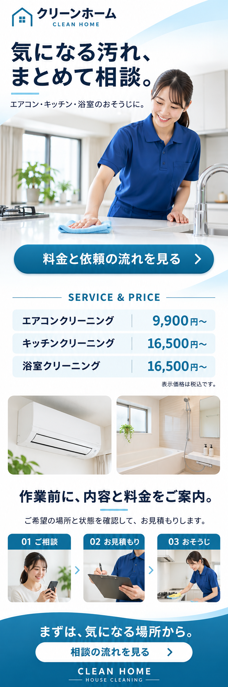
清掃・見積もり案内LP／自主制作
料金と依頼の流れを見せて、相談へつなぐページ。
LPサンプルを見る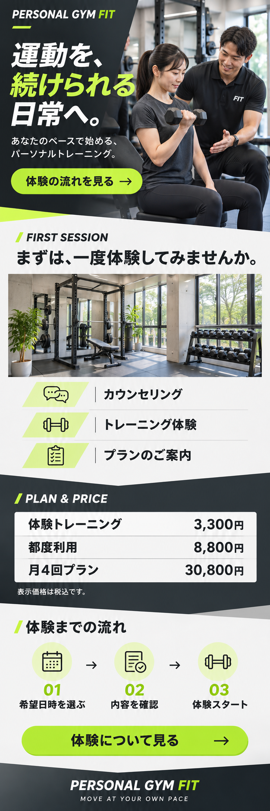
ジム・体験案内LP／自主制作
体験内容・プラン・申込の流れを分かりやすく。
LPサンプルを見る
美容サロン・予約案内LP／自主制作
施術写真・料金・予約の流れを、ひとつのページに。
LPサンプルを見る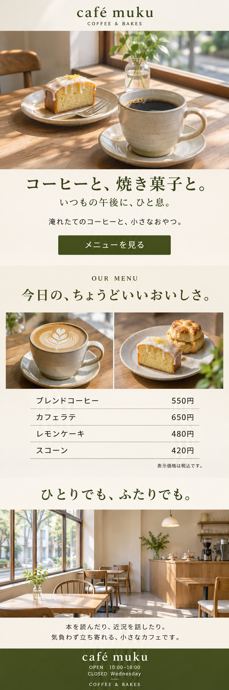
カフェ・店舗紹介LP／自主制作
写真とメニューで、お店の雰囲気を伝えるページ。
LPサンプルを見るすべて架空の自主制作です。業種・目的・ページ構成の見本として掲載しています。
この見本をもとに制作を相談する日常の返事から、丁寧な敬語・家族への連絡まで。
犬種と言葉の種類から、気になる作品をご覧いただけます。
20点を表示｜販売中19点・制作サンプル1点
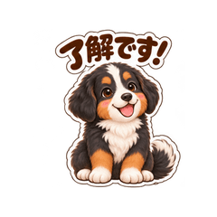
バーニーズ / 日常の返事 / 動くスタンプ
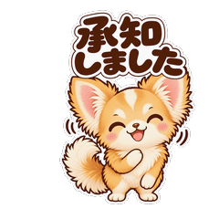
チワワ / 丁寧な敬語 / LINEスタンプ

トイプードル / 日常の返事 / 動くスタンプ
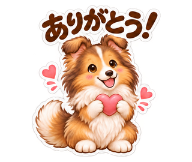
シェルティ / 日常の返事 / 制作サンプル・ショップ未掲載
ゴールデン / 家族連絡 / LINEスタンプ
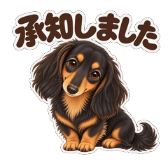
ダックス / 丁寧な敬語 / LINEスタンプ
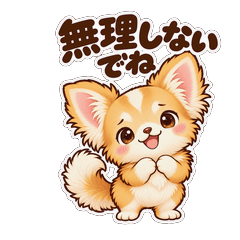
チワワ / 気づかい・応援 / LINEスタンプ

ゴールデン / 日常の返事 / 動くスタンプ
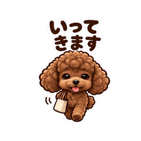
トイプードル / 日常の返事 / 動くスタンプ

チワワ / 日常の返事 / 動くスタンプ

ダックス / 日常の返事 / 動くスタンプ
ダックス / 日常の返事 / LINEスタンプ
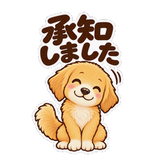
ゴールデン / 丁寧な敬語 / LINEスタンプ
ダックス / 丁寧な敬語 / LINEスタンプ
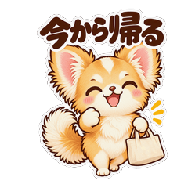
チワワ / 家族連絡 / LINEスタンプ
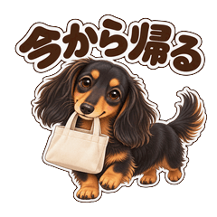
ダックス / 家族連絡 / LINEスタンプ

ダックス / 気づかい・応援 / LINEスタンプ
ゴールデン / 気づかい・応援 / LINEスタンプ
ゴールデン / 季節の言葉 / LINEスタンプ

茶トラ猫 / カメラ / LINEスタンプ
この組み合わせの見本は、まだ掲載していません。犬種か言葉を「すべて」にしてご覧ください。
販売名義：にこっと小箱。ショップ未掲載の作品は制作サンプルとして紹介しています。
STAMP REQUEST
犬種や入れてほしい言葉、使いたい場面など、アイデアをひとことお聞かせください。
メールの下書きを開く送信はメールアプリから行ってください。いただいたご希望は制作の参考にします。
HOW I WORK
まだ輪郭のないアイデアも、
ひとつずつ、かたちに。
何を伝えたいか。どこに手間がかかっているか。まだまとまらないアイデアも、会話から整理します。
目的に合わせて構成・表現・動きを設計し、確認できるかたちに。イメージを共有しながら進めます。
見る人、使う人の目線で確かめる。分かりやすさや使い心地を見直し、細部を整えます。

ABOUT THE STUDIO
LUMEは光やひらめき。
Aには、ArtとRoom Aのイメージを重ねています。
名前に込めたのは、新しい可能性が生まれる一室のイメージです。技術と感性を行き来しながら、アイデアを次の一歩へつなぎます。
LET’S CREATE SOMETHING
ホームページをつくりたい。
イラストで想いを伝えたい。
いつもの作業を、少し楽にしたい。
何から話せばいいか迷ったら、相談シミュレーターへ。3つの質問から相談メモを作れます。